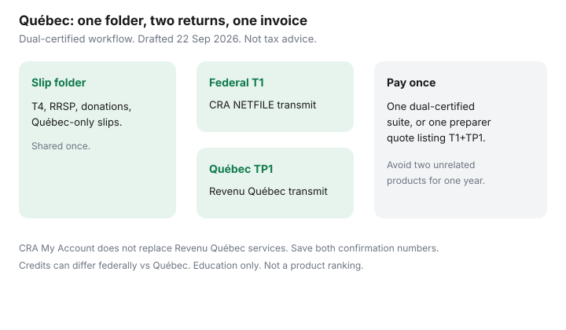

Personal Finance · Canada
Filing Federal and Québec Taxes Without Double Fees: A Cost-Saving Workflow
Québec households file two personal returns: a federal T1 with the CRA and a TP1 with Revenu Québec. Paying twice for disconnected products — a federal-only package plus a separate Québec add-on you did not plan for — is a common April leak. The fix is a single certified workflow and a cost checklist before you click pay.
This page is a cost-saving dual-filing map for households. It is not tax advice and not a product ranking. CRA and Revenu Québec pages used ~22 Sep 2026.
Disclosure: Tax software is an offer type. Saving Optimizer may later add partner links. We do not currently claim software partnerships or endorse a brand. Education only — not tax or legal advice. Certification and price move each season; confirm the week you file.
Key takeaways
- Québec filers need two transmissions: CRA NETFILE (or a preparer) and Revenu Québec’s channel for the TP1.
- Buy one product or quote certified for both. A federal-only cart plus a surprise Québec fee is the double-pay pattern.
- CRA My Account does not replace Revenu Québec’s online services. Set direct deposit and mail in both places.
- Credits and amounts can differ federally versus Québec — tuition, medical, donations, and family lines especially. Read both summaries before you transmit.
- A preparer with a written quote that lists T1 and TP1 can still beat software when the slips are messy.
Why Québec filers have two returns
Most provinces let the CRA collect provincial tax on one T1. Québec does not. Revenu Québec assesses provincial personal income tax on its own return. Federal credits, RRSP deductions, and many slips still matter on the T1; Québec has parallel and sometimes different rules on the TP1.
Practically: one folder of slips, two outputs. Software that is only NETFILE-certified is incomplete for a Québec resident. The high-level split also appears on tax software versus an accountant.

Software workflows that avoid paying twice unnecessarily
Before you create an account:
- Open CRA’s certified-software list for the tax year and confirm the product is marked for NETFILE.
- Confirm the same product (or the same vendor’s Québec module in the same purchase) is accepted for Revenu Québec transmission — Wealthsimple Tax’s public pages, for example, have stated CRA and Revenu Québec certification for recent years; TurboTax and others publish Québec editions. Verify the current year the week you file.
- Read the checkout screen for “Québec” or “TP1” before you pay. A $0 federal simple return that upgrades when you add Québec is still one cart — better than two vendors.
- Do not buy a second, unrelated Québec-only tool for the same year unless the first product cannot transmit the TP1.
| Approach | Fee pattern | Risk |
|---|---|---|
| One dual-certified suite | One checkout; Québec included or a single listed upgrade | Low, if you read the slip interview for both returns |
| Federal-only + separate Québec product | Two invoices; duplicate data entry | High — easy to mistype and to overpay |
| One preparer, written T1+TP1 quote | One invoice listing both returns | Low when the quote names forms; higher if “starting at” |
NetFile vs Revenu Québec transmit basics (high level)
CRA NETFILE is the federal electronic path through certified software. Revenu Québec has its own electronic filing path for the TP1; certified software usually offers a transmit step for each. You typically complete the federal interview, then the Québec interview (or a linked Québec section), review both summaries, then transmit each return.
Do not assume a successful CRA transmit filed Québec. Watch for two confirmation numbers or two success screens. Keep PDFs of both returns and both confirmation pages in the same year folder.
NETFILE’s initial-return window for 2018–2025 returns runs 23 February 2026, 6:00 a.m. Eastern, through 29 January 2027 on CRA’s notice. Revenu Québec publishes its own seasonal dates — confirm on revenuquebec.ca the week you file.
Common credits that differ federally vs Québec
Without turning this into a form-by-form manual (rules change), households should expect differences on:
- Tuition and education — federal and Québec schedules are not identical; transfers to a parent or spouse follow each regime’s rules.
- Medical expenses — thresholds and eligible amounts can diverge; keep receipts for both calculations.
- Charitable donations — federal rates (including 14% on the first $200 in 2026 on the federal side, as used on this site’s credits guide) sit beside Québec’s own credit structure.
- Family and household amounts — Québec has provincial measures that do not mirror every federal line.
- Source deductions — Québec provincial tax is withheld separately; a large refund on one return and a balance on the other is possible.
Run the missed-credits mindset from tax credits households miss on both summaries. Software questions are prompts, not a guarantee you claimed everything you qualify for.
When a preparer is still cheaper than mistakes
Ask for a written quote that lists T1 and TP1, plus rental (T776), self-employment (T2125), stock-plan slips, or a foreign asset form if those apply. Two quotes beat one vague “personal return” price. A cheap software upgrade that mis-reports a stock option or a rental suite can cost more than a preparer’s fee once interest and amendments land.
Share access through CRA Represent a Client and Revenu Québec’s equivalent representative access — not by handing over banking passwords. Revoke access when the engagement ends.
A Québec dual-filing cost checklist
- One dual-certified product or one preparer quote naming T1 and TP1.
- CRA My Account and Revenu Québec online services both set: direct deposit, mail, Autofill where offered.
- Slip folder shared; Auto-fill compared; Québec-only slips included.
- Both return PDFs and both transmit confirmations saved.
- Refund jobs written for each deposit (they may not arrive the same week).
- No second, redundant software purchase “just in case.”
Sources & date stamps
- CRA — Find certified tax software; NETFILE window 23 Feb 2026 through 29 Jan 2027 (~22 Sep 2026 alignment with this site’s software guide).
- CRA — My Account; Represent a Client; Québec residents still file a federal return.
- Revenu Québec — TP1 personal income tax; electronic services and filing guidance on revenuquebec.ca (confirm seasonal dates the week you file; ~22 Sep 2026).
- Provider public pages (e.g. Wealthsimple Tax stating CRA and Revenu Québec certification for recent years) — verify the current tax year at checkout; not an endorsement.
Frequently asked questions
Why do Québec residents file two returns?
Québec administers its own personal income tax. You file a federal T1 with the CRA and a provincial TP1 with Revenu Québec. One software product or one preparer can handle both, but the transmissions are separate.
How do I avoid paying for two unrelated tax products?
Use one suite certified for both CRA NETFILE and Revenu Québec transmission, or one preparer whose written quote lists both returns. Buying a federal-only product and a second Québec-only product for the same year is how households double the fee.
Does CRA My Account replace Revenu Québec?
No. Direct deposit, mail, and Autofill for the federal return live in CRA My Account. Revenu Québec has its own online services for the TP1. Set both up once.
When is a preparer still cheaper?
When the file has rental, self-employment, employee stock plans with complex slips, or a prior-year dispute. Two written quotes that list forms beat a late-night software upgrade you do not understand.
Which credits differ between federal and Québec?
Many. Tuition, medical, donations, and family-related amounts can have different Québec rules and schedules. Software certified for both usually asks the Québec-specific questions; still verify against Revenu Québec’s current guides.